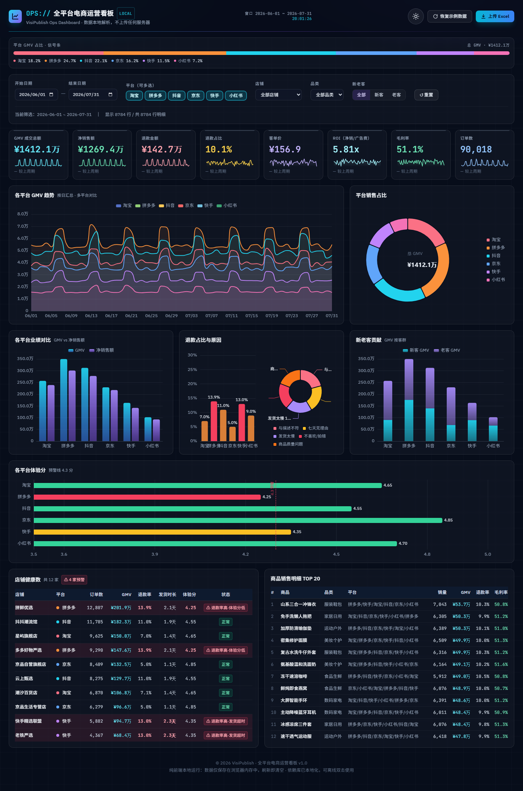
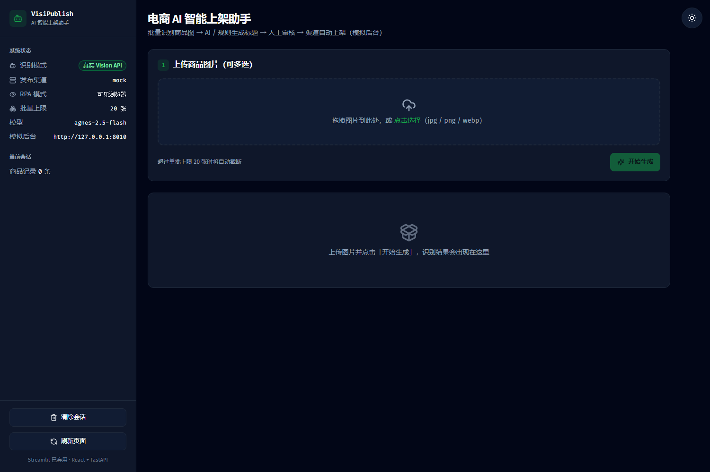
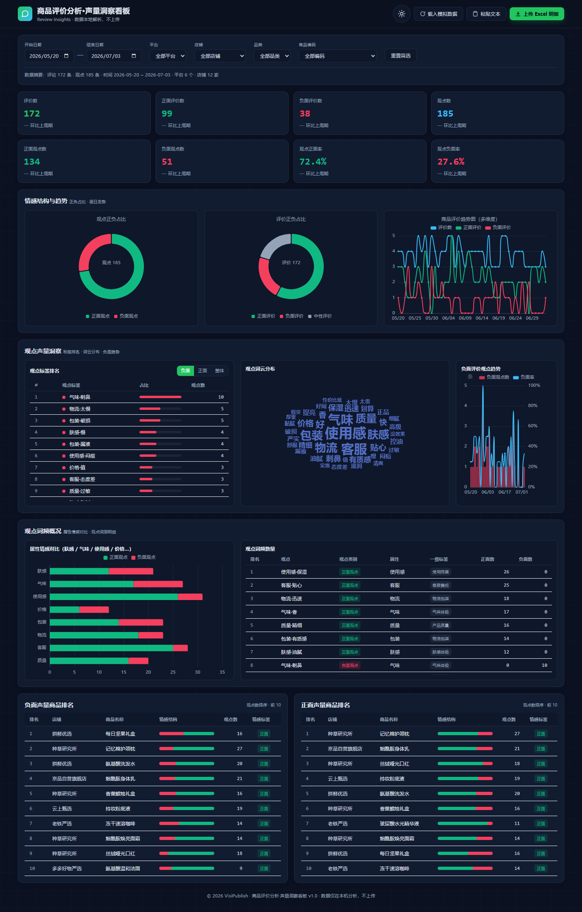

全平台电商运营看板
已完成上传 Excel，一张暗色大屏看全平台：GMV、退款、客单价、ROI，多平台趋势与占比、店铺健康预警、商品 TOP。数据本地解析，双击即用。
Vue 3Tailwind CSS
EChartsSheetJS
打开看板
~/yaokr · 本地电商自动化工具集
三个小项目：一张本地运营大屏、一个 AI 上架助手，和一套商品评价分析看板。 所有数据留在本地，工具不上传，双击就能跑。
01 · projects
已完成 3 个

上传 Excel，一张暗色大屏看全平台：GMV、退款、客单价、ROI，多平台趋势与占比、店铺健康预警、商品 TOP。数据本地解析，双击即用。

批量上传商品图，Vision 识别属性、规则库生成标题与卖点，人工审核后经渠道适配器模拟多平台上架，支持回读校验与截图留痕。

上传商家后台导出的评价 Excel 或直接粘贴文本，提取「属性 × 情感」观点：指标卡、情感结构、观点词云、属性对比与商品声量排名，差评痛点一屏定位。
02 · principles
数据是用户的。工具不上传、不依赖账号，复制文件夹双击就能跑，关掉页面数据即清空。
AI 负责批量生成与初筛，人工审核最后一道。机器提效，人来把关，出问题知道找谁。
每个项目先做能演示的 MVP，验证价值后再补细节。宁可功能少一点，也要真的能跑。